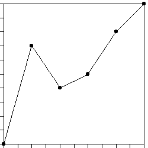

| 1. Pictured here is a price clock time generator. |
 |
| (a) Find the price increments dYi and the clock time increments
dti. |
| (b) Is this a multifractal generator or a unifractal generator? Give a
reason to support your answer. |
| (c) Compute the trading time generators dTi. |
| Here is the solution. |
| |
| 2. Consider this cartoon generator. |
|
| (a) Compute the coarse Holder exponents of this generator. |
| (b) Find the trading time generators for this cartoon. |
| Here is the solution. |
| |
| 3. This problem involves unifractal generators. |
| (a) How many continuous unifractal generators can be constructed by filling in
the two missing segments in (i)? Sketch your generators. |
| (b) Dropping the requirement of continuity, how many unifractal generators can be
constructed by filling in the two missing segments in (i)? Sketch your generators. |
| (i) |
 |
|
(ii) |
|
|
| (c) How many continuous unifractal generators can be constructed by filling in
the two missing segments in (ii)? Justify your answer. |
| (d) Dropping the requirement of continuity, how many unifractal generators can be
constructed by filling in the two missing segments in (ii)? Justify your answer. |
| Here is the solution. |
| |
| 4. Suppose a price clock time generator has increments
dY1, dt1, dY2, dt2,
dY3, and dt3. |
| (a) Suppose this is a unifractal generator. What is the
implied relationship between dti and |dYi|,
for i = 1, 2, and 3? Write this relation in the form dti is a
function of |dYi|. |
| (b) Apply the Trading time theorem to this generator. What is
the relation between dTi and dti, for i = 1, 2, and 3? |
| (c) What does this imply about the effect of the Trading time theorem on
unifractal cartoons? |
| Here is the solution. |
| |
| 5. Pictured here is an iteration of a three segment non-random finance cartoon generator. |
 |
| (a) What iteration is pictured? (Think of the generator as the
first iteration.) |
| (b) Find the turning points of the generator. |
| (c) Is this a multifractal generator or a unifractal generator? Support your
answer with the appropriate calculation. |
| Here is the solution. |
| |
| 6. This problem involves the three segment finance cartoon generator having
turning points (0.2, 0.8) and (0.6, 0.2). |
| (a) Verify this is a multifractal generator by computing the coarse
Hölder exponents. |
| (b) Compute the trading time increments dT1, dT2,
and dT3. |
| (c) Sketch the Price-Trading Time generator. In the same box, sketch the
Price-Clock Time generator. |
| Here is the solution. |
| |
| 7. This problem involves the four segment finance cartoon generator having
turning points (0.25, 0.5), (0.5, 0), and
(0.75, 0.5). |
| (a) Compute the trading time increments dT1, dT2,
dT3, and dT4. |
| (b) Sketch the Price-Trading Time generator. In the same box, sketch the
Price-Clock TIme generator. |
| (c) Comment on what you observe from these sketches. |
| Here is the solution. |
| |
| 8. Pictured here is a price clock time generator. The increments marked on
the t and Y axes have length 1/9. |
 |
| (a) Find the price increments dYi and the clock time increments
dti. |
| (b) Is this a multifractal generator or a unifractal generator? Give a
reason to support your answer. |
| (c) Compute the trading time generators dTi. Find exact values, not
decimal approximations. Your answers should not contain Logs. (Getting the answer to
this form is an exercise in the mechanics of logarithms.) |
| Here is the solution. |
| |
| 9. Suppose a unifractal price clock time generator has increments
dY1, dY2, dY3, dY4 and
dt1, dt2, dt3, dt4. Suppose
dZ1, dZ2, dZ3, dZ4 and
ds1, ds2, ds3, ds4 are the
increments for another price clock time generator. If each dsi =
dti and dZi = 3 dYi for i = 1, 2, 3, and 4.
Is this a unifractal generator? Give a reason to support your anwer. |
| Here is the solution. |
| |
| 10. Pictured here is a price-clock time generator. The increments marked on
the t and Y axes have length 0.1. |
|  |
| (a) Find the price increments dYi and the clock time increments
dti. |
| (b) Is this a multifractal generator or a unifractal generator? Give a
reason to support your answer. |
| (c) Compute the trading time generators dTi. |
| (d) Sketch the price-trading time generator. List the coordinates of the turning
points to three digits to the right of the decimal. |
| Here is the solution. |
| |
| 11. Supose a cartoon generator with increments dY1,
dY2, dY3, dt1, dt2, and dt3
is unifractal. Must the generator with increments dY12,
dY22, dY32, dt1, dt2,
and dt3 be unifractal? Give a reason for your answer. |
| Here is the solution. |
| |
| 12. Pictured here is finance cartoon generator. |
|
| (a) Show this is a multifractal cartoon. |
| (b) Find the trading time generators. Carry three digits to the right
of the decimal for all numerical approximations. |
| Here is the solution. |
| |
| 13. If dY1 = 0.7, dT1 = 0.6, and dT2 = 0.4,
find dY2, assuming dY2 is negative. Carry three digits to the right
of the decimal for all numerical approximations. |
| Here is the solution. |